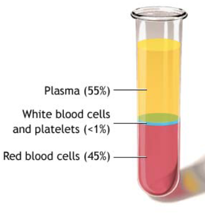

SNC2D 生物知识整理（更新至2018-10-08）
By Pegasis
SNC2D 生物知识整理（更新至2018-10-08）Cell Theory细胞理论Types of Cells细胞种类Comparison Prokaryote&EukaryoteProkaryote原核生物Eukaryote真核生物Comparison Animal Cell&Plant CellAnimal CellCell Membrane细胞膜Nucleus细胞核Nucleolus核仁Chromosomes染色体Cytoplasm细胞质Mitochondrion线粒体Endoplasmic Reticulum (ER)内质网Golgi Bodies高尔基体Vacuoles液泡Ribosome核糖体Centrioles中心粒Lysosomes溶酶体Microtubules微管Plant CellCell Wall细胞壁Vacuole液泡chloroplasts叶绿体Cell Division细胞分裂WhyFunctionsProkaryotesEukaryotesCell Cycle细胞生命周期Mitosis有丝分裂InterphaseProphaseMetaphaseAnaphaseTelophaseMeiosis减数分裂Cancer癌症Difference from Cancer Cells to Normal CellsTypes of TumorBenign tumor良性肿瘤Malignant tumor恶性肿瘤Types of CancerCarcinomas细胞癌Lymphomas淋巴癌Sarcomas肉瘤Causes of CancerGenetic遗传Carcinogens致癌物Mutations突变Radiation放射线Stages of CancerStage 0Stage 1-3Stage 4Cancer Screening癌症检查Biopsy活组织检查Pap test宫颈癌涂片检查PSA test前列腺特异性抗原测试Mammography乳房X线照相术Colonoscopy结肠内窥镜Reducing RiskCancer TreatmentSurgery手术Chemotherapy化疗Radiation放疗Stem Cells干细胞Types of Stem CellsTotipotent Cells全能细胞Pluripotent Cells多能细胞Embryonic Stem Cells胚胎干细胞Advantages & DisadvantagesTissue Stem Cells组织干细胞Adult Stem Cells成体干细胞Advantages & DisadvantagesTissues组织Cell OrganizationTissueOrganOrgan SystemAnimal TissuesEpithelial Tissue上皮组织Connective Tissue结缔组织Muscle Tissue肌肉组织Skeletal Muscles骨骼肌Smooth Muscles平滑肌Cardiac Muscles心肌Nerve Tissue神经组织Plant TissuesVascular Tissue导管组织Xylem木质部Phloem韧皮部Epidermal Tissue表皮组织 (=Dermal Tissue)Ground Tissue基本组织Meristematic Tissue分生组织Digestive System消化系统ProposePart 1: Digestive Tract消化道 (=Alimentary Canal)Lined Materials内衬材料Epithelial Cells上皮细胞Muscle Tissue肌肉组织Nerves Tissue神经组织MouthEsophagus食管Peristalsis蠕动Stomach胃Small Intestine小肠Large Intestine大肠Rectum直肠Part 2: Accessory organs辅助器官Liver肝脏Pancreas胰脏Gall Bladder胆囊Circulatory System循环系统ProposeHeartCardiac Muscle TissueNerve TissueConnective TissueBloodRed Blood Cells (=erythrocytes)White Blood Cells (=leukocytes)Platelets血小板Plasma血浆Blood vesselsArteries动脉Veins静脉Capillaries毛细血管SummaryDiseasesCoronary Artery DiseaseHeart AttackRespiratory System呼吸系统ProposePartsMouthNosePharynx咽Trachea气管Bronchi支气管Bronchioles细支气管Lungs肺Alveoli肺泡Diaphragm隔膜Ribs肋骨Gas Exchange
Cell Theory细胞理论
- All living things are made up of at least one cell.
- We need at least one cell to live.
- All cells come from other cells.
Types of Cells细胞种类
Comparison Prokaryote&Eukaryote
| Prokaryotes | Eukaryotes |
|---|---|
| No nucleus | Has a nucleus |
| Made of one cell | Made of one or more cells |
| Small in size | Large in size |
| Includes bacteria | Includes animal and plant cells |
Prokaryote原核生物
A cell that does not contain a nucleus or other membrane-bound organelles.
Eukaryote真核生物
A cell that contains a nucleus and other organelles, each surrounded by a thin membrane.
Comparison Animal Cell&Plant Cell
- Plant cell have a cell wall
- Plant cell have chloroplasts
- Plant cell have large vacuoles
Animal Cell


Cell Membrane细胞膜
- Made of two layers
- Supports the cell
- Controls what comes into and out of a cell
- It's “Semi-permeable membrane”: only lets some substances pass
Nucleus细胞核
- Controls the cell
- It holds the chromosomes染色体 that have the information to control all the activities
Nucleolus核仁
- Makes ribosomes, maybe more than one in a cell, found in the nucleus
Chromosomes染色体
- Determines what traits a living thing will have, passes information from parent to offspring.
- Depending on the stage of the Cell Cycle, chromosomes will have different appearances, and have different names.


Cytoplasm细胞质
- Jelly-like material that fills the cell (mostly water and other chemicals)
- All organelles are held in the cytoplasm
Mitochondrion线粒体
- The "power plants" of the cell
- Cells contain many mitochondria
- They change food into energy (cellular respiration)
- The more active the cell is (muscle cells), the more mitochondria it has (compared to fat cells)
Endoplasmic Reticulum (ER)内质网
- A folded membrane that moves materials (such as proteins) throughout the cell
- It extends from the nuclear membrane throughout the cytoplasm to the cell membrane
Golgi Bodies高尔基体
- Collect and processes material to be removed from the cell
- They also make and secrete mucus粘液
- The more mucus the cell secretes (intestine肠道 cells), the More Golgi bodies it has
Vacuoles液泡
- A very small bubble filled with liquid
- Surrounded by a single membrane
- Functions include: Storing food and water, removing waste, and maintaining pressure inside the cell
Ribosome核糖体
- Organelles that build “proteins” that are important for cell growth and reproduction
- Often connected to the endoplasmic reticulum
- A cell may have as many as 500,000
Centrioles中心粒
- Only in animal cells
- Used in cell reproduction to help the chromosomes arrange before cell division
Lysosomes溶酶体
- Digests food particles with enzymes
- Pinched of pieces of Golgi apparatus
Microtubules微管
- rod-like, hollow protein tubes that act like tracts along with organelles, like vesicles and mitochondria
- can move
- part of the cytoskeleton
Plant Cell


Cell Wall细胞壁
- Made of a rigid/strong and porous (has holes) material called cellulose细胞膜质
- It provides support for the plant cells and protection from physical injury
- Only plant cells have cell wall
- Immediately inside the cell wall is the cell membrane
Vacuole液泡
- Plants usually have one large vacuole
- Vacuole functions are the same as in an animal cell
chloroplasts叶绿体
- Only in plant cells
- Contain chlorophyll that helps plants get energy from the sun and change that into food
- Gives leaves their green color
Cell Division细胞分裂
Why
- Cell division maintains a surface area to volume ratio of the cell that enables effective exchange across the plasma membrane. Volume of a cell increases faster than the surface area of the plasma membrane
- Maintains a manageable volume to maintain nuclear control (control of all cell activities)
Functions
- Healing & Tissue Repair
- Growth & Development
- Reproduction
Prokaryotes
- Have no nucleus
- Have a single circular chromosome
- Simply divide their cells in two by binary fission
Eukaryotes
Cell Cycle细胞生命周期

Mitosis有丝分裂
- Mitotic division results in genetically identical eukaryotic cells (a clone)
- Mitosis is the basis of asexual reproduction

Interphase
- Cell grows & prepares itself for mitosis by building proteins
- Duplicates genetic material called chromatin染色质, now double stranded
- Centrioles中心粒 are also replicated, more organelles form
Prophase
- The chromatin染色质 condenses into discrete chromosomes染色体
- Chromosomes shorten & thicken, now visible in light microscope
- Nuclear membrane & nucleolus breakdown, freeing the chromosomes
- centrioles move away from each other & form spindle fibers
Metaphase
- Nuclear membrane has disappeared
- Centrioles have reached opposite poles
- Chromosomes line up in the middle of the cell or equator赤道板
- Chromosomes are attached to the spindle fibers by their centromeres着丝粒
Anaphase
- Spindle fibers纺锤纤维 shorten to pull and separate duplicated chromosomes to opposite poles of the daughter cells
- Chromosomes are now referred to as daughter chromosomes
- Daughter chromosomes move to opposite ends of the cell
Telophase
- Daughter chromosomes have reached opposite poles & begin to uncoil
- Nuclear membrane & nucleolus reform
- Spindle fibers disappear
- Daughter cells are genetically
- Cytokinesis胞质分裂 begin
Meiosis减数分裂
- Meiosis results in a halving of the chromosome number in preparation for fertilization
- Meiosis shuffles genes in new combinations
- Meiosis results in genetically different cells
- Meiosis and fertilization are the basis of sexual reproduction
Cancer癌症
Difference from Cancer Cells to Normal Cells
- Spend less time in interphase
- Have uncontrolled mitosis
- Grow faster than normal cells
- Can break away from groups of cells and travel to other places in the body
- Most of them have parts that allow them to grip and grab onto other cells and tissues
Types of Tumor
Benign tumor良性肿瘤
- Does not interfere the functioning of surrounding cells
Malignant tumor恶性肿瘤
- Interferes with the functioning of surrounding cells
Types of Cancer
Carcinomas细胞癌
- Develop in the linings of the body (e.g. Skin, stomach lining, lungs, breast, liver and pancreas)
- Most common forms of cancer
Lymphomas淋巴癌
- Develop in the lymph nodes, bone marrow, or spleen
- Can easily spread to other parts of the body through the lymph and bloodstream
Sarcomas肉瘤
- develop in the bones or connective tissues
- can spread through the bloodstream
Causes of Cancer
Genetic遗传
caused by inherited gene
Carcinogens致癌物
caused by agents in the environment
Mutations突变
caused by random change in the genetic code
Radiation放射线
caused by high ionizing radiation
Stages of Cancer
Stage 0
- Carcinoma in situ原位癌
Stage 1-3
- Larger tumor size
- May spread to nearby organs
Stage 4
- Has spread to distant tissues or organs (Metastasis转移)
Cancer Screening癌症检查
Biopsy活组织检查
- Doctors need to know the tumor is cancerous or not, Benign or not
- In biopsy, doctors removes a sample of the cells from the tumor to analyze
Pap test宫颈癌涂片检查
- Take a sample of cervical cells
- Determine by see if cells are growing abnormally
PSA test前列腺特异性抗原测试
- Take a sample of blood
- Determine by the existence of prostate specific antigen
- Prescribed for men >50 years
Mammography乳房X线照相术
- A type of x-ray
- Used to screen for signs of breast cancer
Colonoscopy结肠内窥镜
- Endoscopic examination of the large intestine
- Use an endoscope or colonoscope
Reducing Risk
- Change in diet
- Avoid smoking tobacco
- Exercise
Cancer Treatment
Each cancer is different, so treatments may vary from person to person
Surgery手术
- Physically removing the cancerous tissue
- Use if tumor is easily accessible
Chemotherapy化疗
- Using drugs to treat the cancer
- Works by slowing or stopping cell division
- Often used to shrink the tumor before surgery or radiation
- Side effects may include nausea, hair loss or fatigue疲劳
Radiation放疗
- Use Ionizing radiation
- By damaging the DNA of cancer cells so they can't divide
Stem Cells干细胞
Stem cells are undifferentiated cell that can become a specialized cell
Types of Stem Cells
Totipotent Cells全能细胞
- From the fusion of egg卵子 and sperm精子 (fertilized egg受精卵)
- Can be used to produce an entire organism
- May be called master cells
Pluripotent Cells多能细胞
- Derived from totipotent cells
- Are the true stem cells usually obtained from embryonic stem lines (?????)
Embryonic Stem Cells胚胎干细胞
- Can differentiate into any kind of cell
Advantages & Disadvantages
| Advantages | Disadvantages |
|---|---|
| Very versatile-pluripotent多功能 | Ethical issues道德问题 |
| Can easily be grown in the laboratory | May produce cancerous cells |
| Can be cultured indefinitely | Unstable - most cells fail to develop |
Tissue Stem Cells组织干细胞
- From skin and bone marrow
- Can differentiate into specialized cells
Adult Stem Cells成体干细胞
- May be obtained from tissues such as umbilical cord blood
- Have been used for years to treat leukemia白血病
Advantages & Disadvantages
| Advantages | Disadvantages |
|---|---|
| No ethical issues | Limited versatility通用性 |
| Less likely to develop cancerous cells | Cannot be easily grown in the laboratory |
| Current limitations in stem cell replacement therapy干细胞替代疗法 |
Tissues组织
Cell Organization
Tissue
- A collection of similar cells
- Performs a particular, but limited function
Organ
- a structure composed of different tissues working together
- Performs a complex body function
Organ System
- a system of one or more organs and structures that work together
- Perform a major vital body function (such as digestion or reproduction)
Animal Tissues

Epithelial Tissue上皮组织
- a thin sheet of tightly packed cells
- covers body surface, internal organs and body cavities
- Lines内衬 internal organs and body cavities
Connective Tissue结缔组织
- Provides support and protection for various parts of the body
- Includes tendons, ligaments, bones, cartilage, blood, and fat
Muscle Tissue肌肉组织
- A group of specialized tissues
- Containing proteins that can contract and enable the body to move
Skeletal Muscles骨骼肌
Help you to move
Smooth Muscles平滑肌
Help your organs to move
Cardiac Muscles心肌
Help your heart to move
Nerve Tissue神经组织
- Conducts electrical signals from one part of the body to another
Plant Tissues

Vascular Tissue导管组织
- Transports water and nutrients
Xylem木质部
Moves water and minerals up from the roots
Phloem韧皮部
Moves the photosynthesized sugar around
Epidermal Tissue表皮组织 (=Dermal Tissue)
- Forms the protective outer covering
- allows the exchange of materials in and out of the plant
Ground Tissue基本组织
- Provides support
- Stores water and nutrients
- Photosynthesis happens in it
Meristematic Tissue分生组织
- Is where growth occurs
- The cells in meristematic tissue are stem cells
Digestive System消化系统
Propose
- Takes in food (ingestion)
- Digests food (digestion)
- Removes the remaining waste (egestion)
Part 1: Digestive Tract消化道 (=Alimentary Canal)
Lined Materials内衬材料
Epithelial Cells上皮细胞
- Secrete mucus (thick liquid) from goblet cells
- Mucus protects from digestive enzymes and acid
- Lubricates or makes the tract easy to move through
Muscle Tissue肌肉组织
Nerves Tissue神经组织
Mouth
- Used to mechanically break down food by chewing with saliva唾液
- Saliva contains enzymes that break down the starches
Esophagus食管
- A muscular tube connecting mouth to stomach
- The movement of food is controlled by nerves and muscles
Peristalsis蠕动
The process of moving food through the esophagus into the stomach with the help of muscles
Stomach胃
- Holds food
- Churns food
- Lined with cells that produce digestive enzymes and acids
- Muscles contract to mix food
- Many nerves
Small Intestine小肠
- 6m long
- Most digestion occurs here
- Small, fine blood vessels
- Smooth muscle
- Nutrients diffuse through wall to blood vessels
- Occurs through the villi
- Absorption occurs through the villi and microvilli
Large Intestine大肠
- 1.5m long
- Larger diameter
- Primarily for water absorption
- Waste material passed on to rectum
Rectum直肠
- Storage of feces and water adsorption
- Waste excreted through anus
Part 2: Accessory organs辅助器官
Liver肝脏
- Produces bile for the small intestine
- Bile helps to break down fats
Pancreas胰脏
- Produces insulin to regulate amount of glucose in blood
Gall Bladder胆囊
- Stores bile between meals
- Bile is released in to the small intestine through in bile duct
Circulatory System循环系统
Propose
- Carry nutrients to cell from intestine
- Carry CO2 and waste away from cell to the lungs and kidneys respectively
- Get O2 from the lungs for the body
- Carry chemical messages between parts of the body
- Move white blood cells that fight viruses or bacteria
- Regulate body temperature
Heart
Cardiac Muscle Tissue
- Muscle tissue only found in heart
- All tissue contracts at the same time
- Results in the pumping of blood
Nerve Tissue
- Controls how often the heart beats
Connective Tissue
- Protects the heart
Blood

- Connective tissue that circulates through the body
Red Blood Cells (=erythrocytes)
Make up almost 50% of all blood by volume
Contains several hundred thousand hemoglobin (a kind of protein)
- Hemoglobin Transports O2 throughout the body
- Hemoglobin gives blood its bright red color
Produced in bone marrow
No nucleus
White Blood Cells (=leukocytes)
- Make up less than 1% of blood volume
- Fight infection, destroy invading bacteria and viruses
- Have nucleus
Platelets血小板
- Make up less than 1% of blood volume
- Small cells that help in blood clotting
Plasma血浆
- Makes up 50% of the blood by volume
- Protein-rich fluid that carries blood cells
Blood vessels
Arteries动脉
Carry blood away from the heart
Thicker walls to withstand pressure
- Pressure is due to heart pumping blood into them
Veins静脉
- Carry blood to heart
- Low pressure
- Thinner walls than arteries
- Have valves to prevent the blood from flowing backwards
Capillaries毛细血管
Connect arteries to veins
Thin walls
- Allow O2 and nutrients to diffuse to body tissue
- Allow CO2 and other wastes diffuse from tissue into blood
Summary
Diseases
Coronary Artery Disease
- Plaque斑块: fat, cholesterol and calcium deposits in the vessels that supply the heart with blood
- Leads to a heart attack
- Can be passed down from family or caused by bad lifestyle choices
- Symptoms: tired, dizzy, pain in chest/arms
- Diagnosed诊断 with angiogram血管造影
Heart Attack
- Coronary arteries冠状动脉 completely blocked
- Heart receives no O2 – stops pumping and starts to die
- Symptoms: Chest pain, Shortness of breath, Nausea, Anxiety, .....
Respiratory System呼吸系统
Propose
- provide O2
- Remove CO2
- Work together with the circulatory system
Parts
Mouth
Nose
- Dirt in the air and other particles are trapped by tiny hairs and sticky fluid
Pharynx咽
Trachea气管
Held open by rings of cartilage软骨
- Cartilage is a special type of connective tissue that is strong and flexible (can bend)
Epithelial cells inside the trachea produce mucus粘液
Many epithelial cells have cilia绒毛
- Help move mucus and remove any left over bad material
Bronchi支气管
- Two in all
- Separates from trachea
Bronchioles细支气管
- Separates from bronchi
- Allows the air to move to all parts of the lungs
Lungs肺
Alveoli肺泡
- Occurs gas exchange
- Surrounded by capillaries
- The wall of it is one cell thick
Diaphragm隔膜
Ribs肋骨
Gas Exchange
- Main purpose of the respiratory system
- Happens in alveoli肺泡
- The amount of O2 in the capillary blood is always less than the amount of O2 from the air. So, the O2 always diffuses into the blood
- The amount of CO2 in the capillary blood is always more than the amount of CO2 from the air. So, the CO2 always diffuses into the air